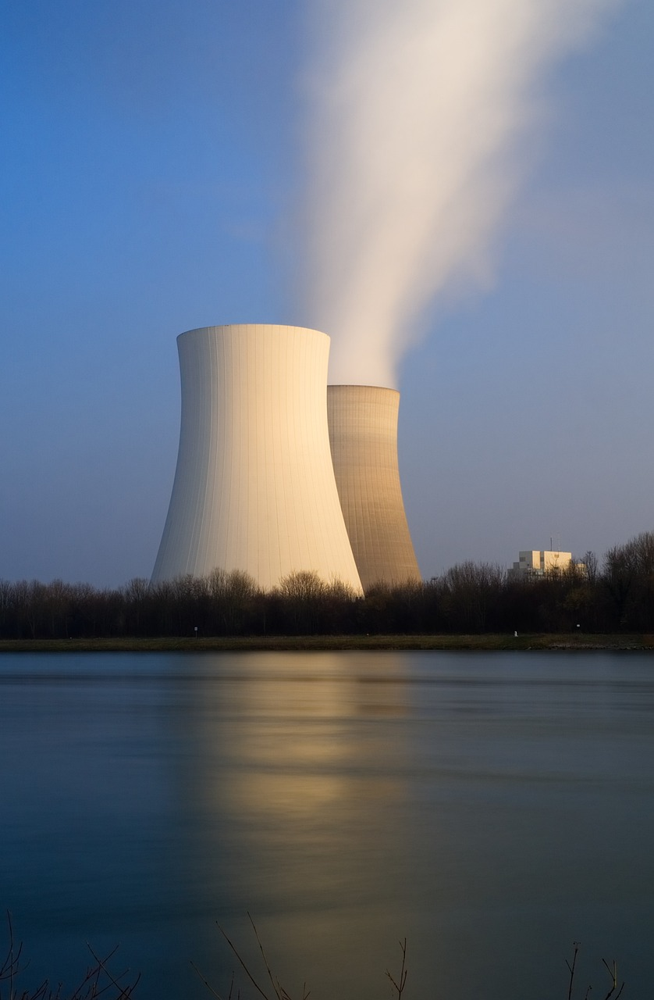

¿Que es?
La energía nuclear es la energía contenida en el núcleo de un átomo. Los átomos son las partículas más pequeñas en que se puede dividirse un elemento químico manteniendo sus propiedades. En el núcleo de cada átomo hay dos tipos de partículas (neutrones y protones) que se mantienen unidas. La energía nuclear es la energía que mantiene unidos neutrones y protones.

La energía nuclear se puede utilizar para producir electricidad. Pero primero la energía debe ser liberada. Ésta energía se puede obtener de dos formas: fusión nuclear y fisión nuclear. En la fusión nuclear, la energía se libera cuando los núcleos de los átomos se combinan o se fusionan entre sí para formar un núcleo más grande. Así es como el sol produce energía. En la fisión nuclear, los núcleos se separan para formar núcleos más pequeños, liberando energía. Las centrales nucleares utilizan la fisión nuclear para producir electricidad.
Cuando se produce una de estas dos reacciones nucleares (la fisión nuclear o la fusión nuclear) los átomos experimentan una ligera pérdida de masa. Esta masa que se pierde se convierte en una gran cantidad de energía calorífica y de radiación, como descubrió Albert Einstein con su famosa ecuación E=mc². La energía calorífica producida se utiliza para producir vapor y generar electricidad. Aunque la producción de energía eléctrica es la utilidad más habitual que se le da a la energía nuclear, también se puede aplicar en muchos otros sectores, como en aplicaciones médicas o medioambientales.
Ventajas y desventajas de la energía nuclear
Como hemos dicho al comienzo, esta energía suscita intensos debates y hay opiniones para todos los gustos.
Desventajas de la energía nuclear:
La energía nuclear produce residuos a partir del material utilizado y preocupan posibles accidentes o fugas, ya que el uranio no es renovable, al menos por ahora. Uno de los inconvenientes de este material es su alta radioactividad, además de contar con una vida media muy elevada.
Ventajas de la energía nuclear:
Las ventajas de la energía nuclear, en cambio, contrarrestan las desventajas. No produce gases de efecto invernadero. Y es una energía constante y planificable todo el año. También sus costes de funcionamiento son bajos. Si sumamos su alta producción energética con bajo combustible, hablamos de una energía eficaz y con claras perspectivas de futuro.
Se dan pasos hacia su reciclaje. Algunos países europeos, China, Rusia y Japón tienen medios para reprocesar el uranio. Las instalaciones de almacenaje garantizan un confinamiento seguro del material. Además, las centrales se rigen bajo normativas muy estrictas y cuentan con personal altamente cualificado.